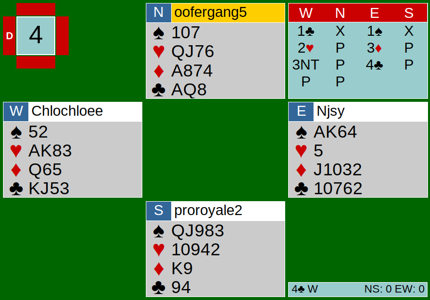
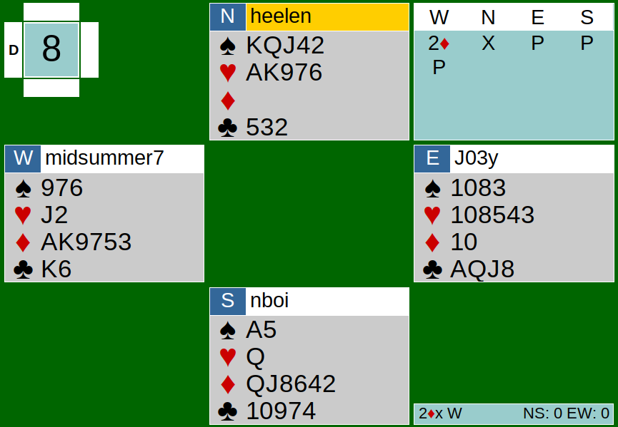

The hands dealt in the team game on June 9th were all very interesting, to say the least. For most boards, at least one player had an extreme shape. In this team game, there were also a lot of doubles, whether they meant penalty, negative, or takeout. Today, we will be analyzing Board 4 from Team Taco’s (Kyle, Keith, Joe, and Joey) table and Board 8 from Team Burrito’s table (Nathan, Helen, Nancy, and Chloe).
{kind=link}

{kind=link}

Board 4 (Team Taco’s table)
The bidding started off with a 1C opening by West. North made a takeout double, even with a flat hand. This wasn’t the best takeout double, but North couldn’t have overcalled because N didn’t have a 5 card suit either. I think passing is the only option here. East responds with 1S, showing 4 spades, and now South doubles. I assume he meant it as penalty because South has QJ to the fifth in spades, but he should have passed. After South’s double, West bids 2H. Even though EW doesn’t consider that as a reverse, West should have bid 1NT. East responds with 3D, when I think East should have bid 2NT, since East knows that West has hearts and clubs. 3D is fourth suit forcing, and with 8 points, West is too weak to bid a new suit, let alone forcing her partner to bid again. West then bids 3NT in response to the 3D bid, but East still keeps bidding up to 4C when pass should have been the only option. Considering their strength, a four level contract was way too high.
The play went well, for the most part. West blew a trick on trick 6 by leading a low club to the 7 of clubs on the board. By that time the Queen, ten, and nine of clubs had already been played, so the KJ in West’s hand were the same, and the only cards that were higher than the 7 on the board were the 8 and the Ace. Losing the Ace of trump is inevitable, but the 8 of clubs should not have won if West played the King or the Jack from her hand. After knocking the Ace out, West could simply play the other honor and draw the 8 of clubs out. EW ended up losing 2 diamonds, 1 heart, and 3 clubs, giving NS 300 points.
Board 8 (Team Burrito’s table)
I chose to analyze this board because of an unfamiliar pitch that had to be made in order to set the contract. To start, the bidding was fairly simple. West preempted and bid 2D. North made a takeout double, showing little to no diamonds and length in the unbid suits. North maybe could have bid one of her majors since she is 5-5 and the suits are solid, but the takeout double works as well. South decides to leave the takeout double in, holding 6 diamonds and a singleton heart. The contract ended up in 2DX by West.
This contract could have been set three ways. North had two options for the opening lead: lead top of her KQJ sequence in spades, or lead top of her AK sequence in hearts. North chose to lead the Ace of hearts. Seeing that South played the Queen, North could assume that South had a singleton and can conclude that West had a doubleton. So, it was safe to play the King of hearts without being trumped by the opponents. Here, South made an interesting pitch of the 5 of spades. This pitch actually blocked transportation when the spades were played, because when North led the King of spades from her sequence on the next trick, the Ace of spades clashed with the King. One way this could have been avoided was if South had pitched his Ace of spades on the King of hearts. That way, North could take her KQJ of spades without being stuck in South’s hand. If South had pitched his Ace, then the contract would have been set because West would not have been able to pitch his spade losers on the clubs.
Another way to unblock the spades suit was if North had led the King of spades. South would realize that North has a spade sequence and had no more than 5 spades (because North would have probably bid spades instead of doubling). South could have covered with the Ace and return a low one so North could win her QJ of spades.
However, I think the easiest way to discover this is by leading a low heart instead of the King of hearts, giving South a ruff. The King of hearts would always win if EW is not able to run their clubs. After South had won the second trick with the ruff, South would play the Ace from Ax, and return one to partner. I think (and hope) South knows better not to lead a club into the AQJx on the board.
Since NS were not able to unblock their spade suit, that gave EW 180 points for making 2DX.
After we all played the 12 boards, Team Taco took home the win. Tuesday’s game refreshed us all on the basics we learned and taught us how unblocking a suit, keeping track of which cards have been played, and correctly evaluating your hand can make or break the contract. Come back next week to read about the intense team game happening this Saturday (6/13)!
Link to hands: http://webutil.bridgebase.com/v2/tview.php?t=141-1591754596&u=heelen